My name is Abdulmajid NASSER and I'm a passionate designer!
I studied IT at the IUT Paris-Descartes in the 16th district of Paris. I then
pursued my studies at ESIEE Paris in Noisy-Le-Grand
where I developped my skills in electronics and embedded systems and had the luck to
conceive some MEMS,
which means MicroElectroMechanical Systems (and not those funny Internet
jokes), in its clean room!
I am still based in France, in Paris, and working currently
as an automotiv HMI (Human Machine Interface) engineer.... but also a
global designer !
This is me in 2018
I speak many languages. I'm native French and Arabic. I'm fluent in English.
I had the luck to learn some German, and Japanese through middle school
to University. By the way, I can even read in Cyrillic !
I like sport a lot, and I am proeficient in this. My creed is :
« A sain mind in a sain body ». I love fighting sport such as Judo and
Muay Thai. I am currently aiming
the black belt (I have to do the katas and stuffs..). I like jogging a lot : I want to do
at least once in my life a marathon or a trail (above 40 km) .
What I have made ?
My passion to art
Since young, I get into photos editing and image creation with sophisticated softwares.
I then had the opportunity to learn game programming and level design with some American
Universities through Coursera such as Michigan State University.
I am particularly intersted in audio and music, especially in designing instruments and sound FX
with Famitracker and Deflemask primarly ;
that's why, I am currently developping C0deTracker.
About my logo
TL;DR : my logo is my first name written in Arabic in square kufic calligraphy style.
When I began to make my website, I thought of designing a logo, something unique and refined
that would fit easily in any graphical charter and look mysterious to the visitor.
I thought first of making my signature as my logo because when I used to sign infront of people
I oftenly got positive feedback (especially from women surprisingly) on how my signature
looks unique and smooth with its curves and how I write it down from right to left. Yes, you get
it : my signature is my first name in Arabic letters, not in Latin, which make it exotic and
intriguing at the same time for a Western audiance.
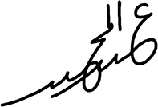
My curvy thick signature
But then I decided to modify it a little bit to make it different from my real signature. I
removed the loop of the first letter Ayin. I added
one point in the loop which corresponds to the point of letters Ba and Jim at the same time. The
tail of the first letter Dal makes actually the stroke of letter Ya.
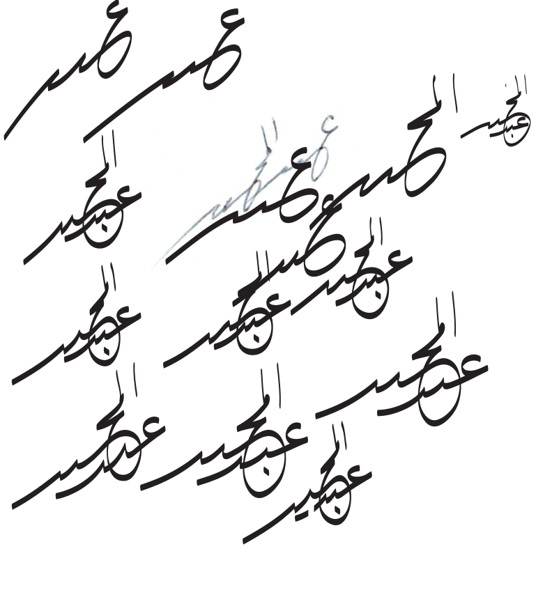
Some handwritten tries of my remixed signature
Eventhough the logo as above may be nice by having that handwritten Arabic calligraphy vibes,
but I felt that because of how it looks,
it seems that it could be difficult to incorporate it into a website with a corresponding Latin
font charter.
So, I decided to drop the idea of making my signature as a logo for my website and decided to
explore other ways.
In order to make the logo more affordable to integrate it into a website, I decided to make it
thicker and more angular.
I did this :
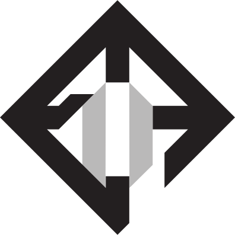
It is written Al-Majid from down in the middle to left, making a 360°
loop
I tried making something looking like a shield or an emblem and at the same time my name on it.
Because of how the letters are not that recognisable, I droped it...
But I didn't drop the idea of making something bold and angular. How about writing my name
completely with a thick typography but maybe obliquely ?
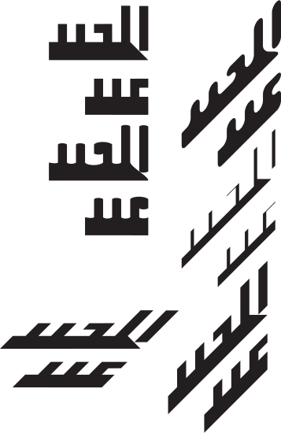
Custom typography from bold to thin and regular to italic
I designed first my name written in an oblique and thick way (bottom right corner of the image
above). From this, I did the other experiments.
The typography looks cool and the first attempt is actually the coolest but I gave up keeping
this idea as a logo because I found it to be too simple for its purpose.
There is nothing special in it into making it a whole logo.
Finally, with some research and perseverance, I designed the definitive logo. Indeed, this is
the one you encountered first when you entered my website.
The logo is thick, squarish and does look like a real square kufic calligraphy.
My current logo following square kufic calligraphy style
I went with old school arabic letters which is without points, as you may notice, in order to make the logo compact.
You may now wonder how to read my name in this logo. There is two part in my name Abd, below, and Al-Majid above as follow :
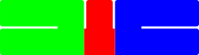
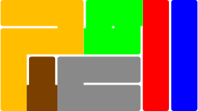
Abd
Al-Majid
Abd part is pretty straight forward to read :
Blue is Ain
Red is Ba
Green is Dal
Al-Majid in the other hand is a bit trickier. It involves the mirroring of letters Ya (unchanged though) and Dal (which makes it looks similar to Ain) because the writing
of these letters went from left to right after letter Jim.
Blue is Alif
Red is Lam
Green is Mim
Yellow is Jim
Brown is Ya
Grey is Dal
If you are a westerner, there's a chance that you can't read my logo and think it is a maze... I hope now that the explanation makes it clear for you!
My portfolio, gamified
You already saw portfolios, right ? How about a gamified portfolio ? I did a funny one in pixel
art in 2018 with LibGDX.
Check it here.
The game is in french and playable only on desktop. Since the game was done in 2018, it needs some updates (diplomas, judo's belt, games done, etc ;)
Enjoy!
Arcaduo : my unreleased mobilphone game
In 2018, I designed and conceived an originally fun mobile game called ARCADUO.
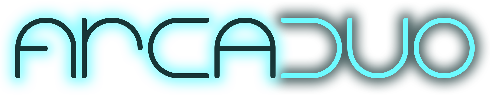
ARCADUO typographic logo
In fact it is not just one game, it is a groupe of multiple games playable and only playable with a partner on the same device. ARCADUO app emphasise on the social aspect
of gaming which is playing with your parents, your siblings, or your friends, with someone you know or don't know, face to face ; in other term, having a direct interaction with your mate which is actually funny
and unusual at the same time on a small piece of device such as a tablet or, even smaller, a mobile phone.
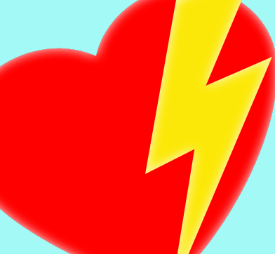
ARCADUO emblem, a heart and a thunder
You may now wonder why the logo is like such above and what is the meaning of a heart and a thunder in a game like this. Right ?
In fact, this is the essance of Arcaduo, each game has two modes : Solidarity mode and Rivalry one. In Solidarity mode, the two players team up together to get the bestt score
they can ; while in Rivalry mode one, players confront each other in a versus mode.
ARCADUO gameplay footage
I aimed this game to be played by casual gamers, those who don't try hard games like kids and grandmas. This is why, as you noticed in the video above, I prefered to bring a simplistic
flat design with simple geometrical shapes with cheerful colors.
ARCADUO games
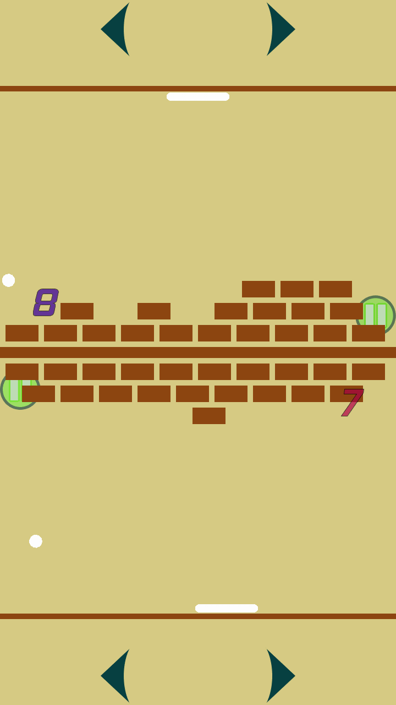
Brick breaker
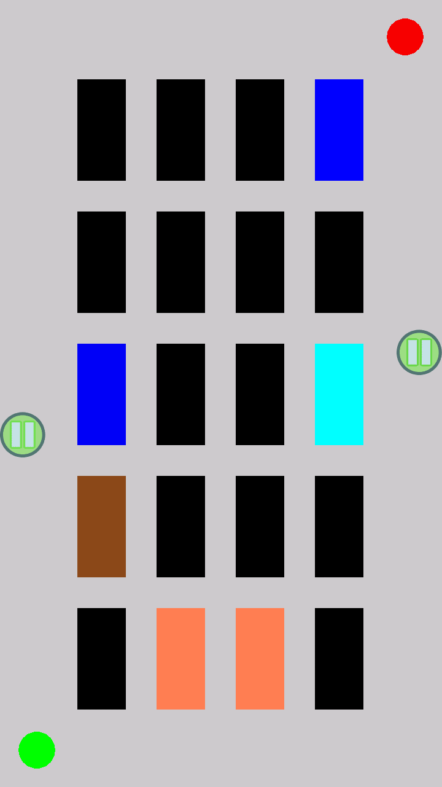
Memory
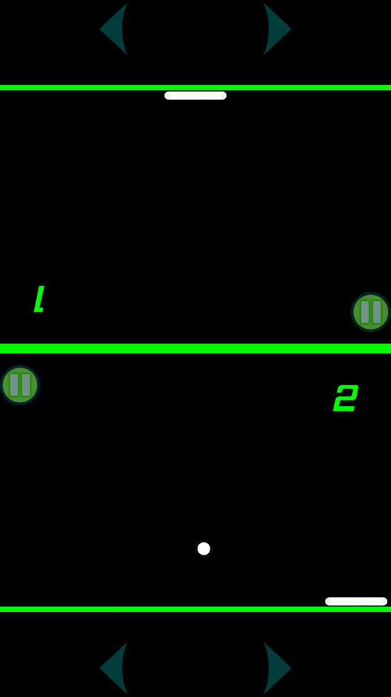
Pong
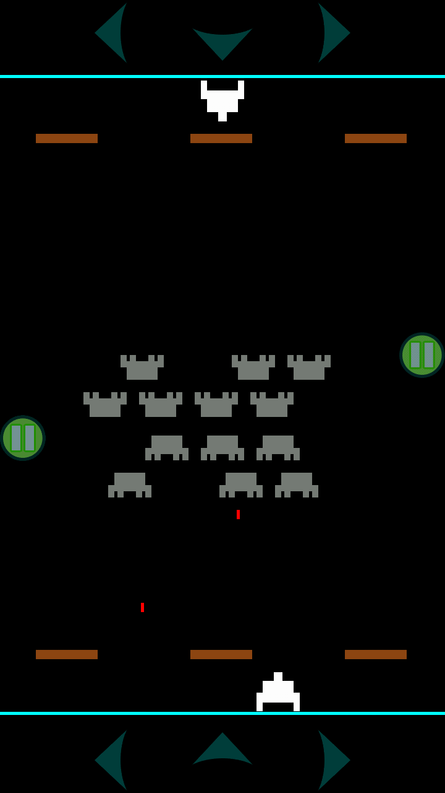
Space invaders
During the day of projects presentation in my University (ESIEE's JDP), I noticed that Arcaduo on my stand
got mainly the attention of girls who enjoyed a lot the concept, which I didn't expect. The explanation to this is maybe because of its social aspect
of the game : playing together on the same screen is nicer than playing alone on the screen online like boys nowadays. The second explanation to this
could be the design choice and cheerful colors.
Average Arcaduo enjoyer
I even made a pitch in front of juries in my University to promote my game. Here is the video of my speech (in French!) below :
3 minutes talk and 5 minutes of questions/answers
My game jams games
I already attended many Game Jams.
My music sequencer : C0deTracker
C0deTracker is my sound, music sequencer (or tracker) written in C++ allowing you, the user,
to design and compose sound/music in your C++ program. An audio API is needed though to record sound or play that latter in real time.
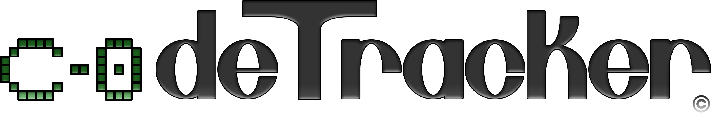
The logo and its typography designed by my hands. Note that C-0 means, in trackers world,
the first note (Do or C) of the first octave of a piano
I were into music tracking since long time with Famitracker, then Deflemask and enjoyed a lot, and still enjoy, old school music tracking hardware in general.
But the story of C0deTracker began recently in 2020 when I was doing a test from N.E.R.D (Nintendo European Research and Development) on ShaderToy, which is a website allowing people to write
and render shaders (fragment or pixel shader to be more specific) online. The aim of the exercice they gave me to do was to render a black hole with ray tracing (which I partially succeeded,
but got rejected due to the fact that I didn't make a true physical simulation of the phenomenon). I noticed some shaders, made by other people on the platform that you can view,
can also render audio. This gave me the motivation to make my generated real time music. With the few knowledge I have in signal processing and FM/AM (Frequency Modulation/Amplitude Modulation) I could
create PSG (Pulse Sound Generator) based instruments and also FM. In short, the shader that I have done for Nintendo was somehow the origin of C0deTracker.
You can play with my shader here. BEWARE : ShaderToy may appear to be too heavy for your computer, it takes a lot of time to compile, don't worrry.
For now, COdeTracker is cool to make NES like music, and way more. C0deTracker is great to integrate in a video game project, for example, where all of your audios
are hard coded in your game and generated at real time. I used C0deTracker for my last two game jams.
My online shops
I enjoy also to design stuff to be printed on products such as T-Shirts, bags, etc...
I currently own shops on Society6
and Spreadshirt.
Why design matters ?
Design is fundamental in our every days life.
It is the form from which the substance of ideas is conveyed through objects whether
it could be an article, a logo brand, a packaging, a pencil, a bowl, a fork... Everything!
In simpler words, a design is how something looks and works.
So, making the user's experience of the product enjoyable is the goal number one of
a good designer.
A designer MUST NEVER EVER forget his target in mind : the final user.
YES! You read it!
In order to procure the best experience to the users, a good design must :
meet the user’s needs
be easy to use and easy to learn
give the user control and freedom
eventually surprise and delight !
How to reach me ?
If you want :
to have a nice looking logo
to create a website
to refresh your brand identity
any advice related with design and UI/UX
You can contact me throug e-mail,
telphone by SMS or call, or LinkedIn :